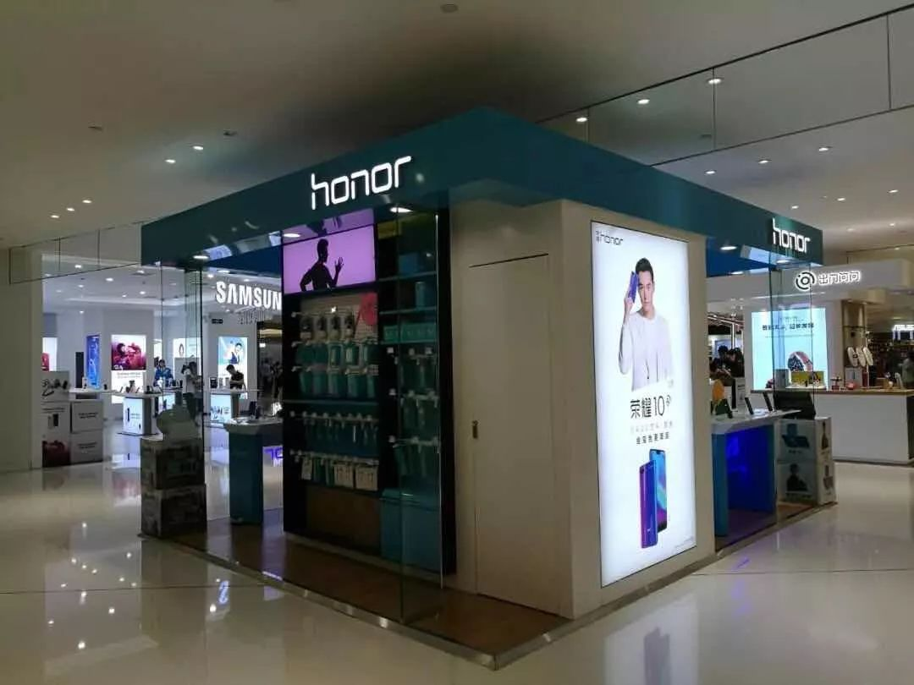

作者 王芳洁
编辑 林文龙
10 月 31 日，荣耀 Magic 2 在各大电商平台首开预售，本来荣耀总裁赵明觉得备货量还可以，但没想到 5 分钟内就全部售罄了。赵明觉得事儿成了，Magic 2 的售价从 3799 元至 5700 元，完全摘掉了荣耀千元机的标签。
比荣耀 Magic 2 早五天发售的华为 Mate 20，现在一机难求。在中国市场，华为和荣耀的销量均已经超过了苹果，这本来是一个该开香槟庆祝的时候，但就在 10 月，在华为 2018 年四季度工作会议上，任正非发表了一个十分低气压的讲话。
“现在外界过分夸大了华为公司，也有可能是灾难，因为他们不知道我们今天处在的高度痛苦，我们实际到底行不行呢？外面说我们好，可能会麻醉了我们的员工，特别是我们发钱还多。”任正非说。他给大家敲响了警钟：“公司已经有点泡沫化了！”
华为到了要防止泡沫化的阶段？在第五届世界互联网大会上，《中国企业家》向赵明提出了这个问题。
赵明认可泡沫化是近期公司内部讨论的重要话题，“我们尤其反对泡沫化，和一旦成功了，大家认为成功就是理所当然。”赵明回答。他特别担心心理膨胀和惯性思维。Magic 2 成了不意味着 Magic 3 就成了，Magic 3 成了不意味着 Magic 4 就成了。这一代成功的手机，下一代消费者看就是无聊的，所以每一代都得战战兢兢地做。
“天堂和地狱只有一步之遥。”赵明说。窗外是夜幕低垂的乌镇。过去五年里，这座千年古镇见证了太多泡沫的兴起，却很难看到它们破灭。因为真到了那一天，泡中人是没机会和乌镇告别的。

华为荣耀旗舰店 （摄影：曾靖）
1
高度痛苦
任正非说“高度痛苦”，很容易让人联想起郁亮喊出的“活下去”。华为和万科都是所在行业的领军企业，却都处于一种类似的高度的危机意识当中。
任正非所说的高度痛苦是什么？
赵明的理解是，“我们在各自领域都已经做到了行业领头羊的位置了，原来是在追别人，目标很明确，不用想别的，只需要看着他，想自己怎么跑得快，方向也是明确的，努力跑过他就行了。但是在今天的位置，往两边看，你在第一的位置，你往哪儿跑，内心是彷徨的。”
荣耀总裁赵明
此外，赵明还看到了成功背后的危险性，越成功越危险。大家都把第一当做打击的对象或者要超越的对象。别人都是瞄着第一跑。“人往往都会过高的估计自己的能力，过低的估计别人的能力。汇报的时候都说领导放心，我肯定把他踩了，但反过来讲，当向下拉你的力量突然之间爆发出来的时候，别人可能都没有想象你能滑的那么快。”
“所以，追别人的时候不用担心，但是一旦跑到现在的位置就要注意了。中国手机的发展过去 20 年的历史充分说明了这一点，够多的教训了。”
荣耀已经连续 9 个季度占领中国互联网手机品牌的销冠。当然，这是一个来自市场的衡量标准，荣耀本身，已经很久不提互联网手机概念了。赵明觉得，当自己已经成为互联网手机冠军的时候，再提互联网手机称王，那不就是“猴子当中称大王”了。
荣耀的目标是做到整个中国手机市场的前三，甚至前二。今年 9 月份，它的销量已经超过苹果了，成为行业第四。目前排在它前面的是华为、OPPO 和 VIVO。
自 2013 年设立华为、荣耀双品牌，两个品牌就已经有意规避彼此竞争。荣耀一直在保持着和华为手机的差异化。首先是拉开了主战场的差距，华为强调的是高品质，荣耀则一直强调高性价比，瞄准的是小米这样的品牌。
另外一个重要区别是商业模式，根据赵明介绍，华为采取的是相对传统的操作模式，类似于苹果和三星，偏重。但荣耀托生于互联网，走的轻资产路线，“别人能干的事情我尽量不干，把整个产业链的利益分配好就行。”例如对品牌的投入、线下人力资源的投入、渠道体系的建设。
当然，和其他互联网手机品牌一样，荣耀也摸到了线上流量的天花板，大家都在布局线下。原本，荣耀可以得来全不费工夫，因为华为已经有了非常成熟的线下渠道体系，只要用华为的门店卖荣耀就行了。但是为了规避与华为的竞争，荣耀手机没有进入华为门店，单独发展线下渠道。今年，它的线上和线下销售比例可以达到 50：50。
“荣耀始终坚持高效率的打法，发展过程跟华为体系在商业模式和未来的风险上可以分担很多未知的东西。比如未来的产品投资方向大家都可以有很大区别，技术路线的选择也可以不一样。我们同样认识到，消费者的品牌在未来的不确定性和风险也很大。”赵明说。
2
攻防兼备
任正非在讲话中，谈到了华为的策略调整，从以前的“防守计划”转变为“攻防兼备”，以防为辅，以攻为主。“我们要建立良好的防线，防线是我们的最后手段，不是最高目的，我们的最高目标还是要积极进攻。”
互联网基因的荣耀，在早年就已经表现出了进攻性，谁让它身处在竞争白热化的互联网上，每年至少经历两次”刺刀见红“时式的营销战役。
2016 年的那个“6·18”，6 月 1 日是开门红，荣耀和小米就打得昏天黑地。据说 1 日当天小米本来的规划是放货 13 万台即可获得销量冠军，但荣耀的进攻逼迫小米放了 30 多万台，而且只打成平手。但在接近 12 点的最后几分钟，小米突然出现超常规大笔订单，放量反超，荣耀作战室的一个女孩当场失声痛哭。
当然，整个6·18 的战程长达 18 天，双方经历了数轮过招，最终的结局是，小米在销量上赢得了冠军，但荣耀因为销售单价更高，折桂销售额排行榜。
赵明也不是鸽派。在乌镇，当谈到竞争对手时，他说：“往往是大家对自己有过高的评价，或者是过高估计了自己的能力，以及过高估计了用户对自己的忠诚度。”
“粉丝不是看你说什么，而是看你做什么，有的品牌做了很多言行不一致的事情。要求客户对你忠诚，这是不现实的，因为我们不是搞宗教的，也不是搞传销的，我们的宗教和信仰就是我们的产品。”
2015 年 2 月份，任正非和余承东等人决定让赵明来执掌荣耀，理由是荣耀是互联网手机品牌，应该找一个比较外向、活跃，并且能“网上对撕”的创业者，否则“关键时刻顶不上去，丢人”。任正非还半玩笑地说：下次让他给我们来个 table dance！（桌子上的舞蹈）。
赵明没跳过 table dance，也自认为不算是特别外向的人，但这并不重要。“作为职业经理人，最终考虑的不是你是什么样的人，而是岗位对你的诉求是什么，你的商业思考逻辑是不是正确。”赵明说。
当然赵明也承认，荣耀在网上撕的能力还是差，和对手是“数量级的差距”。
3
预防泡沫
在最近一次的华为“红蓝军”辩论中，针对荣耀，蓝军提出了几个问题。
比如 2018 年被称为手机业寒冬，但荣耀还在逆势增长，大家对荣耀的评价和印象都不错，但反过来，荣耀构建的能力还不够。今天营销上，荣耀可以依靠的能力是什么？真的出现问题的时候，荣耀的零售能依靠的能力是什么？荣耀的渠道能依靠的能力是什么？荣耀的品牌能依靠的能力和底线是什么？
团队把自己打了个体无完肤，最后大家都在做自我检讨。
这些问题，实际上正印证了任正非提出的“泡沫化”，或者说包括荣耀在内的华为，正在痛苦的思考，如何预防泡沫化，预防“一念天堂，一念地狱”。
针对泡沫化，任正非提到的解决方案是打“太极拳”，缓缓而动，力道却能让沙坑陷下去几公分。他强调要提高经营质量，如果销售收入确实做不上去，可以减少人员编制，调整资源，把成本降下来，只要真实的经营、真实的报表。
以荣耀的海外销售为例，近年来，随着国内手机市场趋于饱和，海外市场成了商家必争之地。除了传统出口企业联想、TCL 等之外，小米、OPPO、荣耀等新兴手机品牌也纷纷出海。品牌一多，竞争也就多了。但是因为海外市场对中国品牌的传统印象是中低端，所以很多品牌都走不出低价的怪圈。但是一台手机从中国生产出来，运到国外，经过海关、经销商，再揣到用户的口袋里，成本是明显高于国内的，比如在中国构建品牌的花销，2~3 个点就足够了，但是在国外可能要5~6 个点，所以海外市场的净利润率低于国内市场。
那么是不是有很多品牌出于战略的考虑，在亏钱做海外市场呢？赵明的答案是：“大家都认为未来可以赚钱，其实很多市场投进去就没收回来。”
赵明认为，在华为强调经营质量的背景下，荣耀不能这么干。他表示，荣耀在国外的定价会比中国高一些。当然，刚开始半年、一年，公司处于投入状态也很正常，因为规模没起来。但进入第二年、第三年，荣耀要求当地国家不能亏损。“卖一台亏一台，那做生意干什么，又不是做慈善。”
除了强调经营质量之外，荣耀还在努力理清能力和泡沫之间的关系。
有些本来依靠的能力，是荣耀主动免除的。2015 年，华为的 logo 从荣耀手机上被去掉了。赵明表示，不打华为荣耀，是希望在发展过程中不受太多保护，尽量发展自己的能力。“华为本身的品牌就是有价值的，我们已经享受到很多福利了，又是华为品牌当中最具有性价比的，不是抢了华为的用户吗？对于我们而言，既享受到母体的科技加持，反过来也不能过于依赖母体。”
在赵明看来，不能被依靠的能力都是泡沫，想象中的能力都是泡沫。比如说，“对自己品牌过高的估计，对青年人的影响力有过高的估计。”
呵呵...
不过我是不反对水军的,水军阵地,你不占领,就是敌人的了.
华为做的很好了,还是点个赞吧.
mate系列旗舰级，和荣耀是两个完全不同的人群区分。虽然数量比不上走量的荣耀，但是mate系列销量真的不低了……
mate7算是华为mate系列成名一战吧，奠定了mate（在国产机中也算首屈一指）旗舰机的地位，今天回看本身确实没有太多出彩的地方，mate7的时候麒麟刚刚翻身，从没法用变成还可以，再加做工也算是达到旗舰机的做工了，相比起来当时的国产机一个比一个省料，真要说系统emui那时候也还真是勉强能用了。
荣耀的比做工比参数和mate系列都没法比，magic的对手也只是小米mix。mate20也不难看吧。华为这几年的高端机一向真机比图片好看。当然，如果你是看到刘海就掉头那就另说了。
说回来，要不是mate系列热销的刺激，雷军哪有做mix系列的想法，oppo的find系列还能再收藏5年。
热门评论
- 媳妇儿郭嘉 发表于 11-14 10:37能说出国外定价比国内高都不错了，现在多少辣鸡公司国内高价低配挣着自己人的钱，国外低价高配跪舔抢市场，然后宣布自己多NB。
- 碎景 发表于 11-14 10:23"荣耀在网上撕的能力还是差，和对手是“数量级的差距。"
呵呵...
不过我是不反对水军的,水军阵地,你不占领,就是敌人的了.
华为做的很好了,还是点个赞吧. - 希望夏天 发表于 11-14 09:33软~~
- superhzh 发表于 11-14 10:08就是看不得国内好
- 大萝卜卜 发表于 11-14 10:52华为膨胀啦（不可避免）
- 笑对当空 发表于 11-14 13:09不论其他 这心态是对的 谁规定前一作大卖 后一作也大卖的？